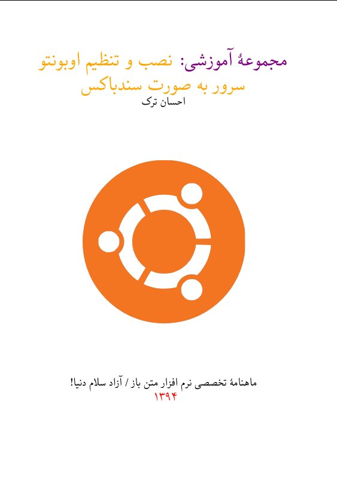

احسان ترک کیست؟

احسان ترک هستم و
از سال ۸۶ بهطور مستمر کاربر لینوکس هستم
و قبل از اون تفننی با لینوکس آشنا بودم.
برنامهنویس جاوا/ اندروید و C++/Qt بهطور جدی (C# و VB در دوران جاهلیت) و آشنایی متوسط با اکثر زبانهای برنامهنویسی رایج. علاقهمند به برنامههای متنبازم.
مثل یه آدم نرمال عاشق پول و هر چی تفریح فانم! آدم متوسطی هستم و در هر چیزی متوسط بودم و هستم از KDE هم خوشم می آد؛ توزیع محبوبم آرچ و هر توزیعی که Pacman داره
احسان ترک هستم و از سال ۸۶ بهطور مستمر کاربر لینوکس هستم و قبل از اون تفننی با لینوکس آشنا بودم.
برنامهنویس جاوا/ اندروید و C++/Qt بهطور جدی (C# و VB در دوران جاهلیت) و آشنایی متوسط با اکثر زبانهای برنامهنویسی رایج. علاقهمند به برنامههای متنبازم.
مثل یه آدم نرمال عاشق پول و هر چی تفریح فانم! آدم متوسطی هستم و در هر چیزی متوسط بودم و هستم از KDE هم خوشم می آد؛ توزیع محبوبم آرچ و هر توزیعی که Pacman داره
Who is Ehsan Tork!
I'm Programmer and Software Developer for Some Open Source and Free Software I Study Programming Engineering. My Favorite OS is GNU/Linux and my main distribution is Arch Linux. I love pacman and flexibility of it.
I'm a fan of Social Democrats at all :) and Reformists in Iran. I love Science and Technology and like help people to learn something about OSS.
I develop some app in Java and Ubuntu Touch and my favorite language is C/C++ and perhaps i love Qt. Java is Fine and i enjoy programming with Java but C++ is more powerful than the Java for me. I can't programming in Vala at all and i hate this Crap!
I love python too but it's a little confusing for me when i try to write code in C++ and Python in a same time. Because of semicolon :)
I'm using Linux since 2008. My first distribution was Red hat 6.
طراحی UX / UI
- طراحی واکنشگرا
- طراحی مدرن و Flat
- طراحی قالب وردپرس و دروپال
- طراحی بهینه برای موتورهای جستجو
- طراحی کاربرپسند
توسعه نرمافزار
- توسعه نرمافزار با استفاده از Qt
- توسعه نرمافزار با جاوا
- توسعهنرمآفزار با GO
- وسعهدهنده یونیکس
- توسعه نرمافزار سیستمی و کاربردی
مشاوره
- بازایابی اینترنتی
- تبلیغات اینترنتی
- بازاریابی شبکههای اجتماعی
- مشاوره حقوقی نرمافزار آزاد
- مشاوره تخصصی نرمافزار آزاد
توسعهدهنده وب
- توسعهنرمافزار با PHP
- توسعهنرمافزار با Go
- توسعه دهنده پایتون
- نصب و پیکربندی سرور
- توسعه کتابخانههای رایگان
نرمافزار آزاد/متنباز
توسعه نرمافزار آزاد/متنباز باعث میشود که مشارکت در پزوژههای بزرگ را یادبگیریم.
برنامهنویسی
ذهن خود را با نوشتن نرمافزارآزاد/ متنباز
باز نگاه دارید.
واکنشگرا
با طراحی واکنشگرا
با تکنولوژی روز همراه باشید.
کارهای من
مقالات من در اینترنت
اخبار مرتبط با پایگاه اینترنتی لینوکس ریویو و دیگر مقالات در سلام دنیا!
پایگاه اینترنتی LinuxReview
پایگاه لینوکس ریویو یکی از آن پایگاههای جامعهمحور و پر جنب و جوش در بین کاربران گنو/لینوکس ایران بود. باوجوداین همواره این پایگاه فرازوفرودهایی را در فعالیت خود داشته که باعث شده است کاربران آن همواره در حال افزایش یا کاهش بوده و فعالیت آن سینوسی شکل باشد. بعدازآنکه مجلات و پایگاههای مختلف یک به یک آمدند و چه بیسر و صدا و چه با سروصدا اینک از بین ما رفتهاند، پایگاه لینوکس ریویو همواره هرچند کج دار و مریض امّا سرپا بوده است.
پایگاه سلام دنیا!
برخی مقالات من در این پایگاه ثبت شده است، برای مشاهدهٔ آنان به این پیوند مراجعه کنید.
کتابها
شرایط دریافت نسخهٔ PDF و چاپی کتاب:
اگر میخواهید کتاب را به صورت PDF دریافت کنید، میتوانید مبلقی را از
این پیوند
پرداخت کنید تا نسخهٔ PDF برایتان ارسال شود.
دربارهٔ کتاب:
امروزه اینترنت موجب گسترش دانش و نشر دانش شده است، به صورتی که اکثر افراد میتوانند داشتهها و دانستههای خود را در این بستر ارتباطی و رسانهٔ جمعی که خود از قابلیت پوشش دادن به نیازهای چندرسانهای کاربران برخوردار است، با دیگران در میان بگزارند. این مجموعهٔ آموزشی که در حال حاضر در قسمت آخر آن هستیم نیز برای این موضوع نوشته شده است، تا کاربرانی که قصد دارند به توسعهٔ نرمافزار تحت وب یا طراحی صفحات وب پردازند، با اندک هزینهای محیطی ارزان و ساده را برای اجرای نرمافزار و کدهای خود ایجاد کنند. با استفاده از این محیط سندباکس به راحتی میتوان تمامی پروژههای مختلف را اجرا کرد.

با این وجود اگر از یک رزبریپای نیز استفاده میکنید، میتوانید با استفاده از یک سوئیچ یا یک مودم که در منزل دارید، شبکهای بیسیم در منزل خود ایجاد کنید، و رزبریپای را به آن متصل کنید، سپس اوبونتو سرور را بر اساس آموزشی که در این مطلب داده شد نصب کرده و با استفاده از انتقال درگاه یا پورت فورواردینگ، درگاههایی را که در ویرچوالباکس انتقال دادیم، به صورتی انتقال دهید که در تمامی شبکهٔ محلی خود بتوانید به آنان متصل شوید. (این مقاله میتواند برای برخی مواقع مفید باشد) بعد از این شما از یک محیط توسعه برخوردار میشوید که هر وقت و هرگاه خواستید میتوانید به آن متصل شوید. البته در این حالت برای ذخیره اطلاعات پر حجم به یک دیسک سخت با ظرفیت مناسب نیز نیاز خواهید داشت.
کدهای لاتک این کتاب از طریق این پیوند از گیتهاب قابل دریافت است.
کدهایی که برای ایجاد پیدیاف در زیلاتک نوشته شدهاند را نیز به صورت کامل در پایگاه اینترنتی گیتهاب بارگزاری میکنم تا در صورت نیاز بتوانید آن را برای نیاز خودتان تغییر دهید، همچنین در آینده نسخهٔ وبی از آن نیز ممکن است عرضه شود. اگر از سیستمعامل گنو/لینوکس استفاده میکنید، نرمافزار «TeXStudio» نرمافزار خوبی برای نوشتن و گرفتن خروجی پیدیاف از کدهای لاتک و زیلاتک به شمار میآید،خودم شخصاً نتوانستم از طریق نرمافزارهای دیگر در نو/لینوکس این کار را انجام دهم. توزیع من برای نوشتن لاتک و زیلاتک، توزیع آرچ لینوکس است و از نرمافزارهای پیشفرض موجود در داخل مخازن آرچ استفاده کردهام.
به زودی ...
- .پروژهٔ متنبازی برای خواندن متون با صدای طبیعی آغاز خواهد شد
- برای آموزش سندباکس یا موارد دیگر در گنو/لینوکس و نرمافزارهای آزاد/متنباز یک ویدئو کست راهاندازی میشود
- کتاب آموزش برنامهنویسی با کیوت کامل شده و در اینجا قرار میگیرد
- .کتاب آموزش نصب و اجرای فدورا کامل خواهد شد
پروژههای فعلی
- تبدیل قالب و اصلاح زیر نویس فارسی ، برای دریافت از
این پیوند
اقدام کنید.
- ...
ادای هکرها را در نیاورید!
با استفاده از توزیعهای KoliLinux و ... شما هیچ وقت به یک هکر تبدیل نخواهید شد. عمرا ....
شبکههای اجتماعی
شماره همراه: 0918901535
ایمیل: journalehsan@gmil.com
ایمیل: journalehsan@yahoo.com
وبسایت : www.journalehsan.github.io
تماس با من
برای اینکه با من تماس بگیرید میتوانید از این قسمت پیام خود را برای احسان ترک نوشته و سپس با استفاده از کلید ارسال ، پیام خود را ارسال کنید.
لطفا پیامهای ارسالی به دور از تبلیغات و اسپم باشد.
این قسمت در حال تکیل شدن است!